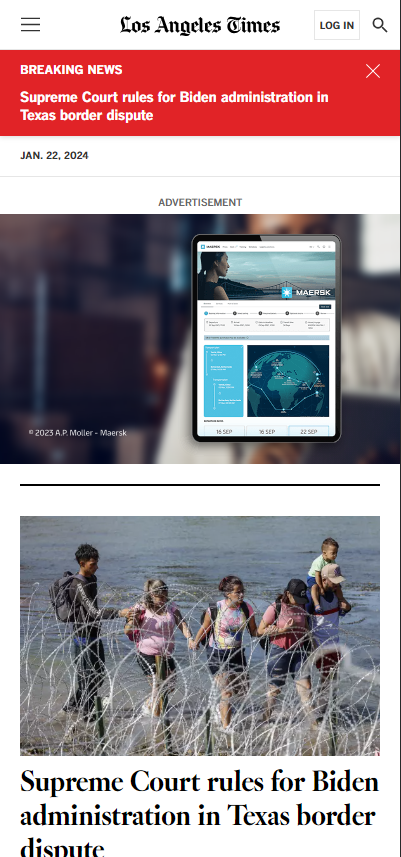

Rule of Thirds
AmazonAmazon uses the Rule of Thirds having a grid that fits the rule exactly. In the picture the grid is very noticable.
Whitespace
ShopifyShopify uses whitespace to seperate different sections of the website. In the picture you can see whitespace seperates to sections of the website.
Proximity
LA Times
Los Angeles Times uses proximity by putting borders and lines between elements to seperate them from each other. In the picture you can see multiple borders dividing sections of the page.